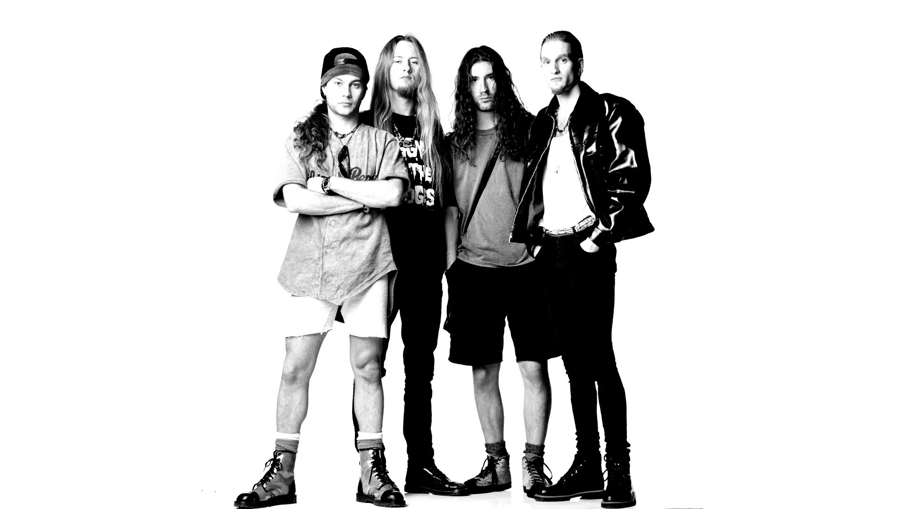

Es una banda de rock formada en Seattle, Washington en 1987.
Alice in Chains es una banda de rock formada por el guitarrista y vocalista Jerry Cantrell y el bajista Mike Starr en Seattle, Washington en 1987. En 1992, la banda lanzó su álbum "Dirt", que fue un éxito comercial y crítico. Sin embargo, el éxito de la banda se vio ensombrecido por los problemas de adicción de sus miembros, especialmente del vocalista Layne Staley, quien falleció en 2002. La banda continuó después de la muerte de Staley, con William DuVall como nuevo vocalista. Han lanzado varios álbumes desde entonces, incluyendo "Black Gives Way to Blue" en 2009 y "Rainier Fog" en 2018. Escrito acerca de la banda Alice in Chains